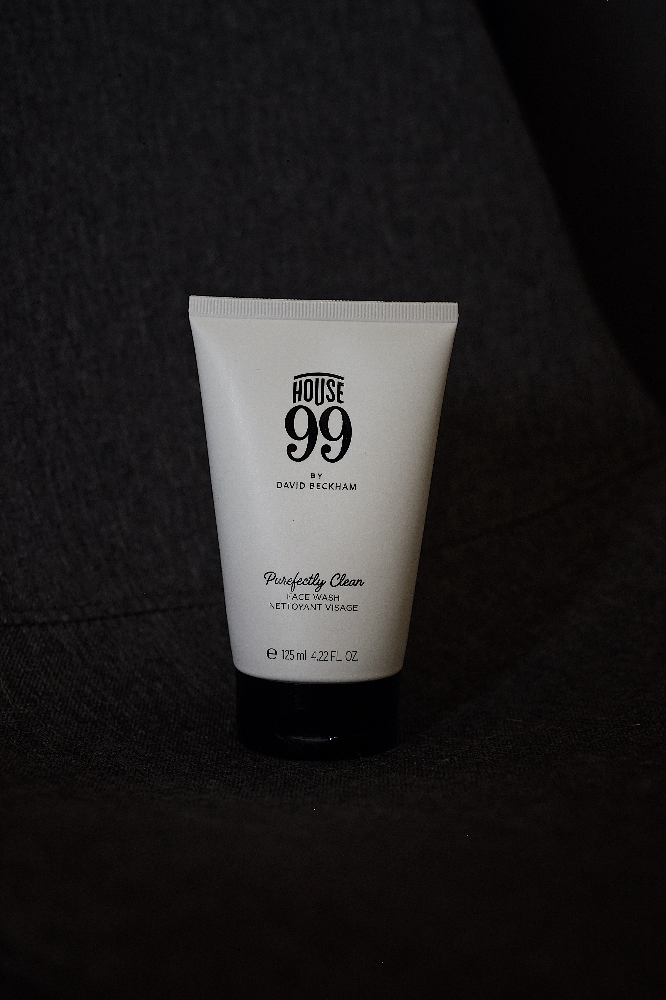
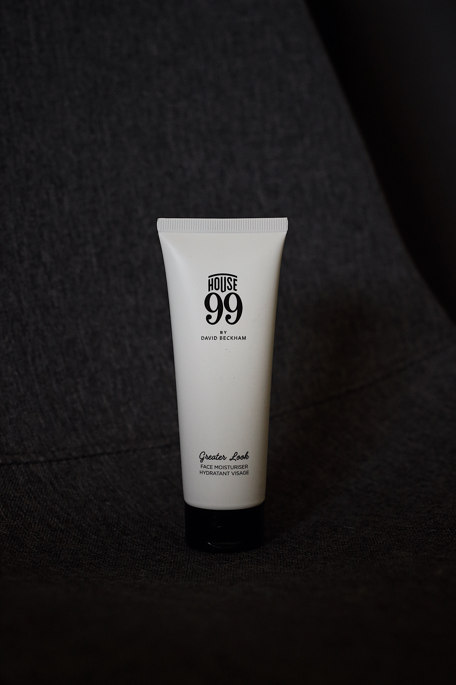
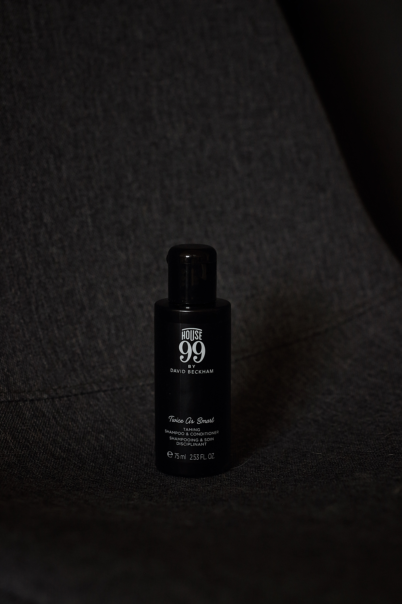

Oct 26
Quality Grooming with House 99
Diving into the products that were made to make men look and feel their best.

With work and school constantly battling for my time, life hasn’t slowed down much for me. All this busyness has kept me from being as creative as I’d like. Luckily, with midterms out of the way and moving into the holiday season, I’ve managed to find some time in my days to sit back and do some of the things I enjoy doing most.
I was fortunate enough to partner with David Beckham’s new men’s grooming brand House 99 to highlight some of their products and share my thoughts on them. This campaign came at the perfect time not only to give me a creative outlet but to help me focus more on my skincare routine. Thanks to House 99, my skin and hair has never felt better than it does now. I’ve been really paying attention to how each product makes me feel and will try to be as honest and detailed in my reviews as possible. Below are a few of my favorite products from their line.
Purefectly Clean Face Wash

Let’s be honest, every one of their products smells like if heaven were a whiskey lounge full of men wearing Drake’s and Thom Browne suits. What I enjoy in particular about the face wash is the added charcoal to insure a deeper cleanse and healthier complexion. I tend to have problem areas around the nose and cheeks but am yet to see a new blemish appear since the start of using this product. I use this face wash twice daily: once in the morning and once at night.
Shop Now
Greater Look Face Moisturizer

It’s been a process searching for the perfect moisturizer for my face. They’re always either too sticky, make my face too oily, or make my face too dry. This face moisturizer falls perfectly in between all of these to offer a product which not only feels light on my skin but keeps it from drying out and becoming too oily all at once. This product is also paraben and sulfate free which is always a plus. I use the face moisturizer twice daily: once in the morning and once at night.
Shop Now
Twice as Smart Taming Shampoo and Conditioner

Hair care is an area many men lack in. They tend to assume that short hair doesn’t need to be maintained as much as long hair which is just wrong. An easy transition for men who are guilty of only shampooing and not conditioning is the taming shampoo and conditioner. It combines shampooing and conditioning into one seamless process. This stuff smells great and makes my hair feel fresh all day. To top it off, the product is free of silicones, parabens, and colourants. I use the taming shampoo and conditioner once daily because my hair is so oily, but I would recommend about three to four times a week and using a dry shampoo on the other days for normal to dry hair.
Shop Now